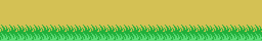

16384 bytes. No loader, no blocks: the MSX maps the cartridge at 0x4000-0x7FFF —page 1— and that is the whole picture of memory, with no overlays: no address means two different things at two different times.
The first sixteen bytes are the header the BIOS reads:
41 42 77 40 00 00 00 00 00 00 00 00 00 00 00 00
'A' 'B' \_ INIT = 0x4077The two letters mark an executable cartridge; of the four vectors only INIT is set —STATEMENT, DEVICE and TEXT, the BASIC ones, are zero—.
INIT (0x4077), in order:
di, interrupt mode 1, and the stack at 0xE400;ldir (0x407D), which is where the whole state will live;jp 0x4038 into the H.KEYI hook at 0xFD9A —the 0xC3 byte first, then the address (0x408A-0x4094)—;ei, and falls into jr $ at 0x40A7.Those two bytes are the main program. The whole game runs inside the interrupt, fifty or sixty times a second, and the program never comes back.
Because the game is the interrupt, a frame that overruns would re-enter itself. 0xE005 stops that: the hook (0x4038) reads the video chip's status to drop the request, plays the sound —always, before anything else—, and only then looks at the lock. If it is set, that is all this interrupt does (0x4067): the music carries on and the frame that is still running is left alone.
Everything the game keeps lives in the 1 KB from 0xE000, with the stack on top of it at 0xE400.
| 0xE000 / 0xE001 | the game state, 0 to 19, and its sub-state |
| 0xE002 | the options: keyboard, two players, game in progress, whose turn |
| 0xE005 | the lock: the interrupt is inside |
| 0xE008 / 0xE009 | what was pressed last frame and this one, in joystick format |
| 0xE010-0xE02D | the three sound channels, ten bytes each |
| 0xE038-0xE03F | the copy of the eight video chip registers |
| 0xE040-0xE048 | the high score and the two players' scores, in BCD |
| 0xE050-0xE06F | the player in play: lives, stage, SCENE, clock, direction… |
| 0xE080-0xE09F | the other player's copy of that, swapped on each turn |
| 0xE0B0-0xE12F | the 32 sprite attribute records, uploaded whole every frame |
| 0xE130-0xE14F | the frame counters and the phases of the vines and water jets |
| 0xE134-0xE13C | the player: Y, X, pose, which way he faces, his state |
| 0xE150-0xE155 | the six parameter bytes the scenery engine copies out of the ROM |
| 0xE156 / 0xE158 | this screen's fixed obstacles and its moving ones |
| 0xE18C-0xE1AE | the obstacles' X positions and what each is worth |
| 0xE200-0xE205 | the jump: which curve, which way, how many frames |
The video chip is set from an eight-byte table at 0x4545, copied to 0xE038 and sent out register by register (0x4528):
| register | value | what it says |
|---|---|---|
| 0 | 0x02 | graphics mode 2 |
| 1 | 0xE2 | 16 KB, screen on, interrupts on, 16×16 sprites |
| 2 | 0x0E | the name table at 0x3800 |
| 3 | 0x7F | the colour table at 0x0000 |
| 4 | 0x07 | the pattern table at 0x2000 |
| 5 | 0x76 | the sprite attributes at 0x3B00 |
| 6 | 0x03 | the sprite patterns at 0x1800 |
| 7 | 0xE1 | the border |
Colours below and patterns above is the other way round from the usual layout, and it is why every address in this listing looks displaced if you read it expecting the common one.
In this mode the screen is three thirds, each with its own pattern and colour bank, and the game uses that on purpose: the font is loaded once and then copied into the other two thirds (0x4583 and 0x4594), while the scenery tiles are loaded only into the third where they are going to be drawn. The vine is the clearest case: its top row is drawn with tiles 0xB0-0xB6, which are loaded into the first third, and everything below it with tiles 0x60-0x9B, loaded into the middle one.
Three ways, and each one is used for exactly what it suits:
ldir-style copy (0x454D).Two of the smallest calls, replayed: the strip of grass on row 15 (0x5E71) and the ground of rows 16 to 19 (0x5CEA). Between them, twelve bytes of parameters and two short lists.

The left-facing halves are not stored at all. 0x5A4B reverses the bits of a tile and 0x5A09 does the same across the two halves of a 16×16 sprite, and both run at load time: the cartridge carries 23 sprites and puts 46 in video memory.
Not one byte unaccounted for: 7,448 of code reached by the tracer and 8,936 of data, each inside a declared range with the instruction that reads it noted alongside.
| 0x4000-0x4010 | the header |
| 0x4010-0x4038 | the video chip primitives, and four 0xFF of padding |
| 0x4038-0x4077 | the interrupt |
| 0x4077-0x4149 | INIT, the two-byte main loop, the dispatcher, the controls, one game step |
| 0x4149-0x4171 | the table of twenty states |
| 0x4171-0x4468 | the twenty states: title, menu, demo, play, death, game over, stage cleared, screen change |
| 0x4468-0x44C8 | the credits, in tiles |
| 0x44C8-0x4626 | new game, video and sound setup, the copy routines and the wipe |
| 0x4626-0x4795 | the font loader, the score, the extra lives, the high score, the scoreboard and the lives |
| 0x4795-0x47FB | the title screen and its columns |
| 0x47FB-0x48CE | the ATHLETIC LAND logo, compressed |
| 0x48CE-0x4A4E | the 48 font glyphs |
| 0x4A4E-0x4B52 | the scoreboard labels and the four menu options |
| 0x4B52-0x4BD8 | the KONAMI logo loader and the run-length decompressor |
| 0x4BD8-0x4C6B | the KONAMI logo, compressed |
| 0x4C6B-0x503B | the game's tiles and their colours |
| 0x503B-0x555B | the 64 sprites |
| 0x555B-0x56DD | the vine: nine pointers and nine drawings |
| 0x56DD-0x5857 | the water jets: eighteen pointers and eighteen blocks |
| 0x5857-0x5C32 | the frame, the demo's input, the graphics loader, the mirrors, and building a screen |
| 0x5C32-0x5C72 | the two tables of thirty-two screens |
| 0x5C72-0x5F65 | the scenery: the skies, the hedge, the ground, the pond, the obstacles and the player's entrance |
| 0x5F65-0x5FD2 | the scenery engine |
| 0x5FD2-0x66A6 | the counters and the eleven moving things, the clock and the scoring |
| 0x66A6-0x6DD4 | the player: seventeen states, the collisions, his sprites and the jump curves |
| 0x6DD4-0x70A5 | the scenery lists and the tiles they use |
| 0x70A5-0x714F | the loader for the patterns and colours |
| 0x714F-0x77F8 | the colour lists, the colours and the tile patterns |
| 0x77F8-0x77FE | six bytes with no use, between the patterns and the sound |
| 0x77FE-0x7960 | the sound: the request, the player and the two formats |
| 0x7960-0x7C3E | the note periods, the table of 34 tracks, and the tracks |
| 0x7C3E-0x8000 | the padding up to 16 KB: 962 bytes, all 0xFF |